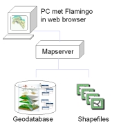

Een mapserver is, kort gezegd, een applicatie die een plaatje maakt uit geo-informatie. Het werkt als volgt.
Alles begint op het moment dat de bezoeker van een website een pagina bezoekt met daarin een interactieve kaart. Die interactieve kaart bestaat uit de combinatie van de Flamingo kaartviewer en de mapserver (ArcIMS van ESRI).
Op dat moment wordt door de viewer een vraag gestuurd naar de mapserver. Die vraag luidt: "maak een plaatje van dit gebied met daarin die en die kaartlagen en vertel me wanneer het plaatje klaar is". De mapserver ontvangt de vraag, maakt het plaatje en zegt tegen de viewer: "daar staat je plaatje". De viewer haalt het plaatje op en toont het in zijn kaartvenster.
Nu kan de bezoeker opnieuw een actie uitvoeren. Hij kan in- of uitzoomen of bijvoorbeeld op een object klikken om er zo informatie van op te vragen. Elke actie resulteert in een nieuwe vraag aan de mapserver. In het geval van zoomen is de vraag hetzelfde als zojuist, alleen nu voor een kleiner of groter gebied. Bij informatie opvragen luidt de vraag: "stuur mij een tabel met de eigenschappen van dit object". Bij aankomst van de tabel wordt die door de viewer getoond en de bezoeker kan weer een andere actie uitvoeren.
Deze interactie tussen bezoeker, viewer en mapserver gaat door totdat de bezoeker de pagina verlaat (met andere woorden stopt met het gebruik van de viewer).